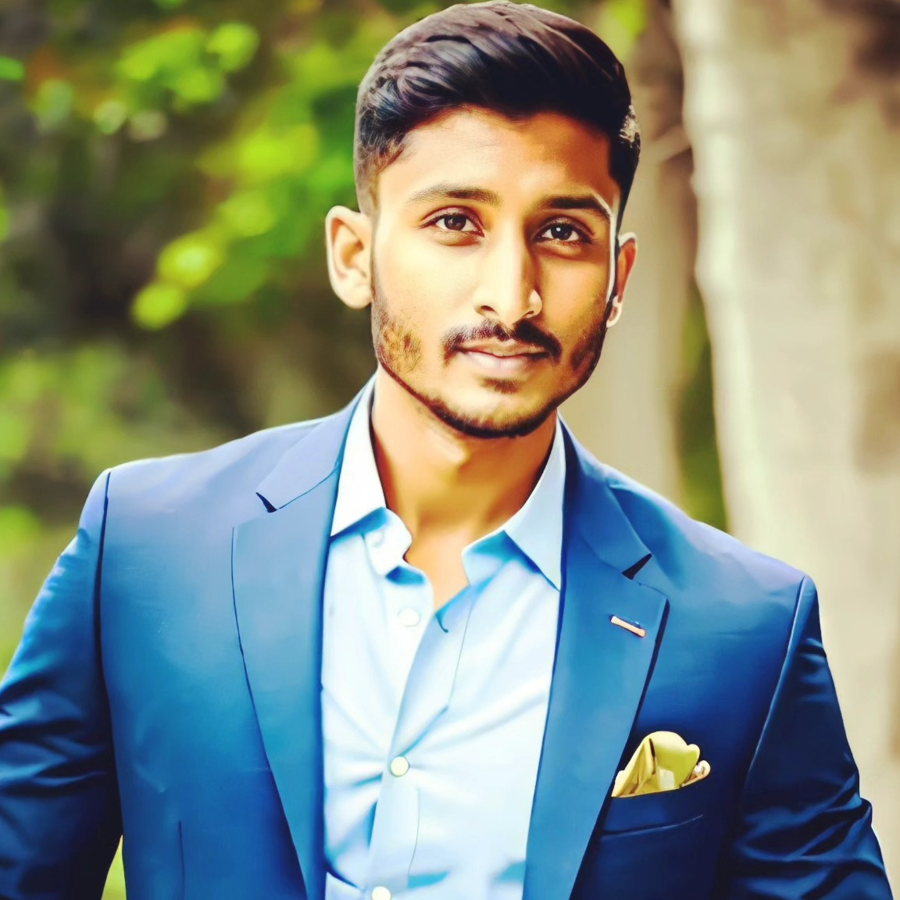

RASHID HALAGERI
Finance YouTube Content Creator @TechnoRashid
ABOUT ME :
“Hi, I'm Rashid Halageri. I'm an Aspiring
YouTube Content Creator & Part Time
Forex Trader.”
I am a results-driven professional with a
strong background in the filed of
Marketing. With 3 years of experience, I
have consistently demonstrated a
passion for Marketing & Sales, and a
proven track record of achieving 1.2 Cr
INR Sales on Crypto Since 2019 Till The
Date. I am dedicated to all Career
Objectives, and I thrive in collaborative
environments where I can leverage my
skills to benifits for whom I'm working
forward.
My commitment to continuous learning
and adaptability allows me to excel in
dynamic work settings. I am well known
for my leadership skills and my ability to
handle the people's and solving their
problems most efficiently. I am seeking
opportunities to contribute my expertise
and drive toward your job profile within
a forward-thinking organization.
To Know More About Me Click on More Details Option Below :

CONTACT DETAILS :
- Gmail : rashidrx350@gmail.com
- Telephone : +91 720-423-3276
- Website : https://bit.ly/TechnoRashid
More Details
EDUCATION :
-
2020 10+2 0r Equivalent
- Government PU College, Gadag.
-
2023 Full Stack Web Developement
- https://www.udemy.com/ Online Student.
-
2024 Software Developer Course (Plus)
- https://www.crio.do/ , Online Student.
-
2025 Bachelor of Engineering in Electronics and Telecommunication
- Dr AIT Banglore.
ASPIRING TO BE :

Multi Billionare [Forbe India]
Through Full Time YouTube Content Creation and Social Media Influencing of Quality Education of Finance &
Technology - TECHNO RASHID
- Chartered Accountant Aspirant.
- Founder at My Own Business idea & to connect peoples and provide them world class service.
- Shark Forbe Under 10 : The Retail Corporate Angel Investor on Startups and Invoative Ideas.
FUTURE PLANS :

-
2025 Master in Business Administration [MBA Finance]
- Dream College - IIM Banglore.
-
2025 Enterpreneurship
- Certified Course From Top Tech Industry Giants or Online Platforms.
-
2025 Television Production & Mass Media
- Producing fir Indian TV Shows and Films.
LANGUAGES KNOWN :
- Kannada - Native
- English - Adcvanced
- Hindi - Adcvanced
- Telugu - Speaking
WORK EXPERIENCE :

Looking after my experiences I'm Complete Fresher, One Who Dosen't have any work experience But as a Full Stack Web Developer Aspirant I a Great Experience with working on Multiple Ecommerce & High Level and Low Level System Architecture Designing Projects & a Real Time Experience on Sales and Content Creation on YouGTube for Marketing.
>SKILLS :

- Web Design - Beginner [HTML]
- Creativity - Advanced
- Problem Solving - Intermediate
- Content Creation - Passion
- Video Editing - Intermediate
PROJECTS :
HOBBIES :
- Reading Books
- Screen Play Writing
- Video Editing
- Travelling
- Exploring New Things
- Networking
- Finding Loop Holes
- Criminology